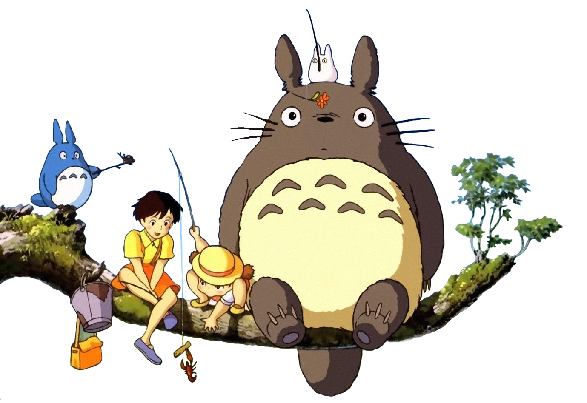
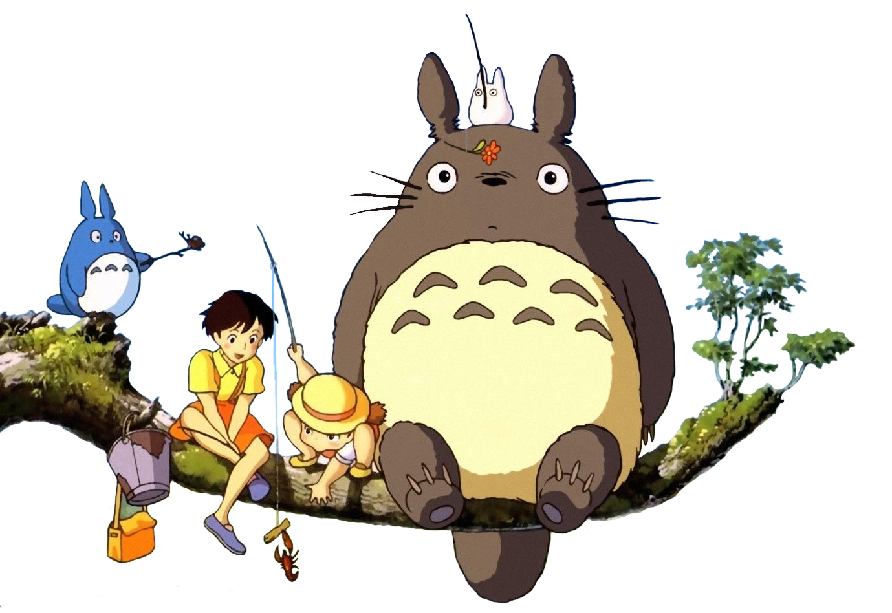

Introduction and History
Studio Ghibli is one of the most acclaimed animation studios in the world, and the home of some of the most revered and beloved animated works to have ever graced the screen.
Founded on June 15, 1985, the studio is headed by the directors Hayao Miyazaki, Isao Takahata, and the producer Toshio Suzuki. Eight of Studio Ghibli’s films are among the 15 highest-grossing anime films made in Japan, with Spirited Away (2001) being the second highest, grossing over US$290 million worldwide.
Many of the Studio’s works have won the Animage Anime Grand Prix award, and four have won the Japan Academy Prize for Animation of the Year. Five of Studio Ghibli’s films received Academy Award nominations in the United States. Spirited Away won a Golden Bear in 2002 and an Academy Award for Best Animated Feature Film in 2003. Totoro, a character from My Neighbor Totoro, is the studio’s mascot.